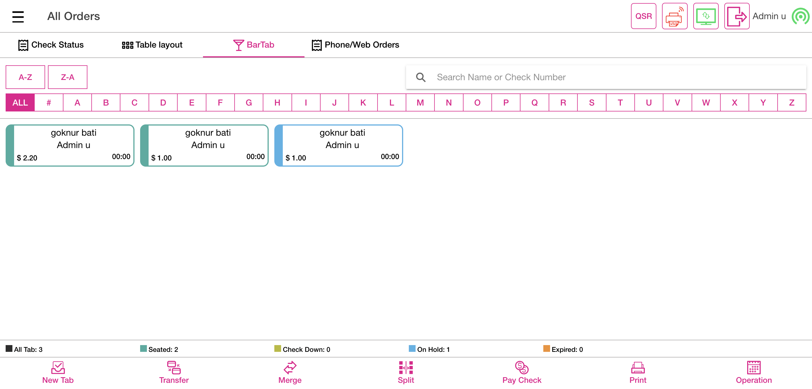
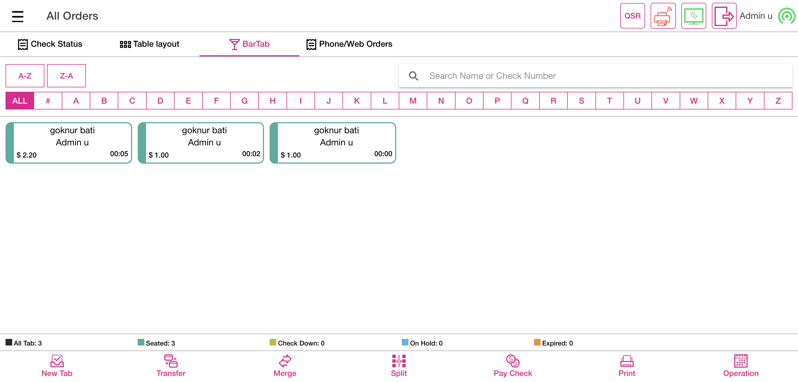
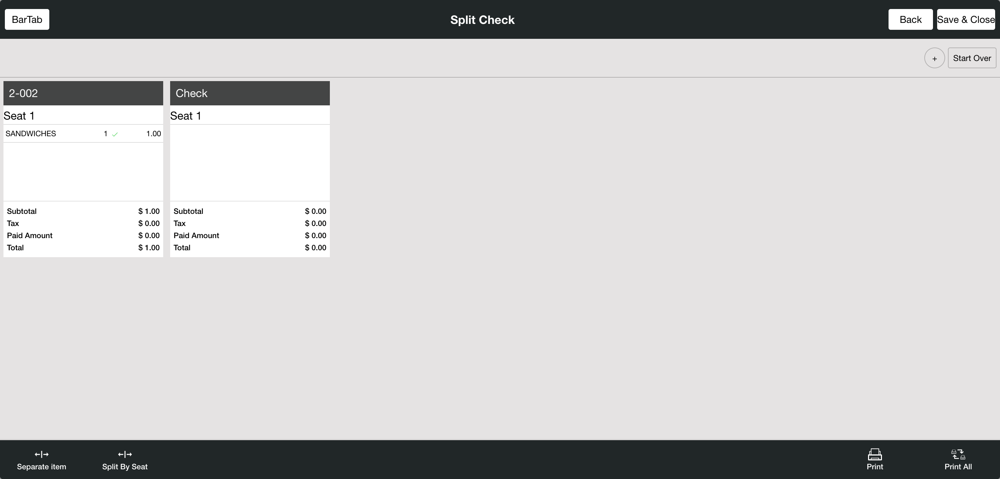
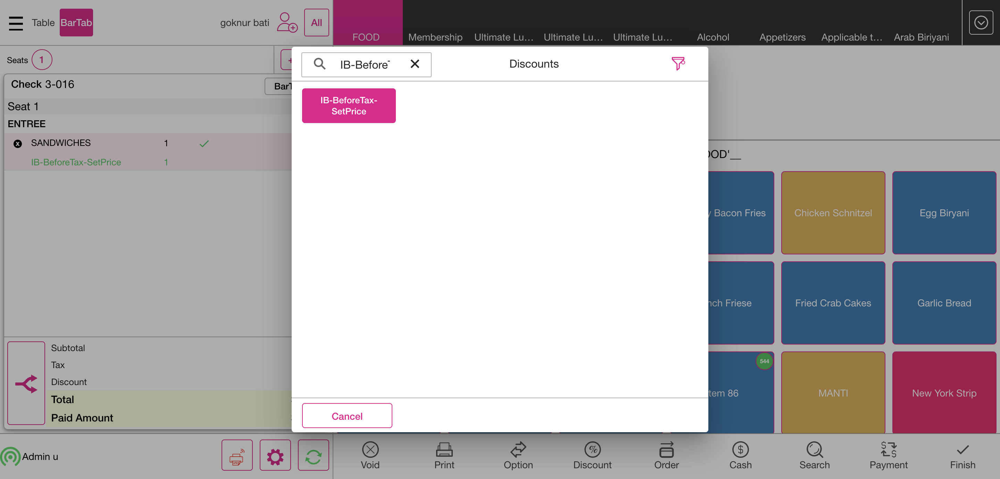

-
Bar Tab
7:21:11 pm / 00:17:53:742 Fail
Bar Tab
01.03.2024 7:21:11 pm 01.03.2024 7:39:05 pm 00:17:53:742 · #test-id=1PassVerify Bar Tab to SplitGiven I'm logged inAnd I closed the order type windowGiven User click setting iconAnd User verify setting optionsWhen User select POS Settings tabThen User open ask customer name option if disable in void screenAnd I click the Toggle Icon buttonAnd I click POS Icon from ToggleAnd User click cancel buttonWhen User click QSR on Menu Item pageThen User select Bar Tab in order typesAnd User enter customer name for bar tabAnd I click the Exit to close the preauth windowWhen User click All buttonAnd I click BarTab LayoutWhen User click new tab on Bar tabAnd I click the Exit to close the preauth windowAnd User enter customer name for bar tabAnd I select category as "FOOD"And I get check numberAnd User take an order as "SANDWICHES"Then User verify be directed menu item pageAnd I select menu item as "SANDWICHES"And User click finish buttonWhen User select Split option on Bar tabThen User select split by seat optionAnd I select check from the bartab screenAnd User click Save and Close button on Split Check pageWhen User click finish buttonAnd User verify be directed bar tab pageAnd User verify All Tab option on Bar TabAnd User verify Seated option on Bar TabAnd User verify Check Down option on Bar TabAnd User verify On Hold option on Bar TabAnd User verify Expired option on Bar TabWhen User click Transfer option on Bar tabThen User verify transfer screenThen User click cancel buttonWhen User click Pay Check button on the bartabAnd I select check from the bartab screenThen I should see the Payment windowAnd I click the Exit button in the payment windowWhen User click finish buttonWhen User click operation buttonThen User verify be directed operation pageAnd I click POS Icon from ToggleThen User click cancel buttonAnd I click log off button in order screenPassVerify Merge with Discount on Bar TabGiven I'm logged inAnd I closed the order type windowGiven User click setting iconAnd User verify setting optionsWhen User select POS Settings tabThen User open ask customer name option if disable in void screenAnd I click the Toggle Icon buttonAnd I click POS Icon from ToggleAnd User click cancel buttonWhen User click QSR on Menu Item pageThen User select Bar Tab in order typesAnd User enter customer name for bar tabAnd I click the Exit to close the preauth windowAnd I get check numberAnd I select category as "FOOD"And User take an order as "SANDWICHES"When User click Option TabAnd I click discount on check option screenThen I should see Check Based Discount ScreenAnd I click Discount as "IB-AfterTax-Amount"And I click Back button on Discount ScreenAnd I select category as "FOOD"And User take an order as "SANDWICHES"And I select menu item as "mongo test"When User click Option TabThen User select tax exempt optionWhen User click Option TabThen User select gratuity optionAnd User select fixed gratuity optionAnd User verify fixed gratuity1And I click Finish buttonAnd I click BarTab LayoutAnd I click New Tab in the Bar Tab ScreenAnd I click the Exit to close the preauth windowAnd User enter customer name for bar tabAnd I get check number1And I select category as "FOOD"And User take an order as "SANDWICHES"When User click Option TabAnd I click discount on check option screenThen I should see Check Based Discount ScreenAnd I click Discount as "IB-AfterTax-Amount"And I click Back button on Discount ScreenAnd I select category as "FOOD"And User take an order as "SANDWICHES"And I select menu item as "mongo test"When User click Option TabThen User select tax exempt optionWhen User click Option TabThen User select gratuity optionAnd User select fixed gratuity optionAnd User verify fixed gratuity1And I click Finish buttonAnd I click BarTab LayoutThen I click Merge buttonAnd I click closed check in bar tabAnd I click Yes button on the bartabAnd I click clear text buttonAnd I click closed check in bar tab1And I click Yes button on the bartabAnd I click clear text buttonWhen User click merge done buttonThen User confirm merge checks confirmation popupAnd I click Done button on the PopupWhen User click Pay Check button on the bartabAnd I click merged barTabThen I should see the Payment windowThen I click cash button from the payment method popupAnd User click submit buttonAnd I click BarTab LayoutAnd I click power buttonPassVerify search option with check number on Bar TabGiven I'm logged inAnd I closed the order type windowGiven User click setting iconAnd User verify setting optionsWhen User select POS Settings tabThen User open ask customer name option if disable in void screenAnd I click the Toggle Icon buttonAnd I click POS Icon from ToggleAnd User click cancel buttonWhen User click QSR on Menu Item pageThen User select Bar Tab in order typesAnd User enter customer name for bar tabAnd I click the Exit to close the preauth windowWhen User click All buttonAnd I click BarTab LayoutWhen User click new tab on Bar tabAnd I click the Exit to close the preauth windowAnd User enter customer name for bar tabAnd I get check numberAnd I select category as "FOOD"And User take an order as "SANDWICHES"Then User click finish buttonAnd I click BarTab LayoutThen I should see closed check in barTabAnd User verify searched customer nameAnd I click power buttonPassApplication display the entered name or updated nameGiven I'm logged inAnd I closed the order type windowGiven User click setting iconAnd User verify setting optionsWhen User select POS Settings tabThen User open ask customer name option if disable in void screenAnd I click the Toggle Icon buttonAnd I click POS Icon from ToggleAnd User click cancel buttonWhen User click QSR on Menu Item pageThen User select Bar Tab in order typesAnd User enter customer name for bar tabAnd I click the Exit to close the preauth windowWhen User click All buttonAnd I click BarTab LayoutWhen User click new tab on Bar tabAnd I click the Exit to close the preauth windowAnd User enter customer name for bar tabAnd I get check numberAnd I select category as "FOOD"And User take an order as "SANDWICHES"Then User click finish buttonThen I should see closed check in barTabAnd User verify searched customer nameAnd I click clear text buttonAnd I click closed check in bar tabAnd I click Add Customer ButtonAnd I search for "thomas a"When I click "thomas a" to select customer for the seatThen I should see customer as "thomas a" added on order screenThen User click finish buttonAnd User verify be directed bar tab screenAnd I click merged barTabAnd I click Payment button in the Order Management ScreenAnd I click cash button from the payment method popupAnd User click submit buttonAnd I click power buttonFailApplication display the check in blue color - on holdGiven I'm logged inAnd I closed the order type windowGiven User click setting iconAnd User verify setting optionsWhen User select POS Settings tabThen User open ask customer name option if disable in void screenAnd I click the Toggle Icon buttonAnd I click POS Icon from ToggleAnd User click cancel buttonWhen User click QSR on Menu Item pageThen User select Bar Tab in order typesAnd User enter customer name for bar tabAnd I click the Exit to close the preauth windowThen User click food categoryAnd I select menu item as "SANDWICHES"Then User click Option TabAnd User select Hold check optionAnd I click Done button on the Popup in void screenAnd User click option back buttonThen User verify hold menu itemWhen User click finish buttonAnd User verify be directed bar tab screenAnd User verify expired orderWhen I click QSR tabStep skippedThen User click cancel buttonStep skippedAnd I click log off button in order screenStep skippedcom.qa.stepdef.Hooks.quit(io.cucumber.java.Scenario)screenshotFailApplication can sort customer name also bar tab check from A to ZGiven I'm logged inAnd I closed the order type windowGiven User click setting iconAnd User verify setting optionsWhen User select POS Settings tabThen User open ask customer name option if disable in void screenAnd I click the Toggle Icon buttonAnd I click POS Icon from ToggleAnd User click cancel buttonWhen User click QSR on Menu Item pageThen User select Bar Tab in order typesAnd User enter customer name for bar tabAnd I click the Exit to close the preauth windowThen User click food categoryAnd I select menu item as "SANDWICHES"Then User click finish buttonAnd User verify be directed bar tab screenWhen User click sort A-Z button on bar tabThen User verify bar tab orders from A to ZWhen User click sort Z-A button on bar tabStep skippedThen User verify bar tab orders from Z to AStep skippedWhen I click QSR tabStep skippedThen User click cancel buttonStep skippedAnd I click log off button in order screenStep skippedcom.qa.stepdef.Hooks.quit(io.cucumber.java.Scenario)screenshotPassApplication should ask customer name enable Ask customer name optionGiven I'm logged inAnd I closed the order type windowGiven User click setting iconAnd User verify setting optionsWhen User select POS Settings tabThen User open ask customer name option if disable in void screenAnd I click the Toggle Icon buttonAnd I click POS Icon from ToggleAnd User click cancel buttonWhen User click QSR on Menu Item pageThen User select Bar Tab in order typesAnd User enter customer name for bar tabAnd I click the Exit to close the preauth windowWhen User take an orderThen User click Option TabWhen User select gratuity optionThen User select varying gratuity optionAnd User enter percentage of varying gratuityAnd I enter the percentage1 as "1500"And User click apply button for varying gratuityAnd User verify varying gratuity as "$ 0.15"Then User click finish buttonAnd I click power buttonFailSplit without Selected ItemGiven I'm logged inAnd I closed the order type windowGiven User click setting iconAnd User verify setting optionsWhen User select POS Settings tabThen User open ask customer name option if disable in void screenAnd I click the Toggle Icon buttonAnd I click POS Icon from ToggleAnd User click cancel buttonWhen User click QSR on Menu Item pageThen User select Bar Tab in order typesAnd User enter customer name for bar tabAnd I click the Exit to close the preauth windowAnd I get check numberAnd I add a new seatAnd I click seat 2 for add menu itemWhen User take an order as "Burger ind"When User select first seat on menu item page in split screenThen User take an order in split screenThen User click finish button in split screenAnd I click split button on the bartab screenAnd I click split check button on the bartab screenAnd I click closed check in bar tabThen I should see the Split check screenWhen User click split by seat option in split screenThen I should see menu item are moved to split checkWhen I click the save & close button on the split screenStep skippedThen I Should get back to the Order ScreenStep skippedThen User click finish button in split screenStep skippedAnd I click power buttonStep skippedcom.qa.stepdef.Hooks.quit(io.cucumber.java.Scenario)screenshotPassSplit EvenlyGiven I'm logged inAnd I closed the order type windowGiven User click QSR on Menu Item page in split screenGiven User select DineIn mode in split screenAnd I select table as "T20"And I add a new seatAnd I get check numberWhen User take an order as "SANDWICHES"When User select first seat on menu item page in split screenThen User take an order in split screenAnd I click the split seat from Order screenThen I should see the Split ScreenAnd I click Split Evenly ButtonThen I should see Seperate Item is DisableThen I should see the additional seat & Item on the Split SeatWhen I click the save & close button on the split screenThen User click Cash Tab in split screenAnd User click exact option in split screenAnd User click enter button in split screenAnd I click Table Layout tabAnd I click power buttonPassSplit ItemGiven I'm logged inAnd I closed the order type windowGiven User click QSR on Menu Item page in split screenGiven User select DineIn mode in split screenAnd I select table as "T20"And I add a new seatAnd I get check numberWhen User take an order as "SANDWICHES"When User select first seat on menu item page in split screenThen User take an order in split screenThen User click finish button in split screenWhen User click split button in split screenAnd User click split by seat button in split screenAnd I click the check from the table layout screenThen I should see the Split ScreenAnd I click on itemAnd User click Seperate Item buttonAnd I select the number of split item "2" for Split checkAnd I click the Continue buttonThen I Should see Split Evenly is DisableThen I should see the additional seat & Item on the Split Seat1When I click the save & close button on the split screenThen I Should get back to the Order ScreenThen User click Cash Tab in split screenAnd User click exact option in split screenAnd User click enter button in split screenAnd I click power buttonPassSplit without SaleGiven I'm logged inAnd I closed the order type windowGiven User click QSR on Menu Item page in split screenGiven User select DineIn mode in split screenAnd I select table as "T20"And I add a new seatWhen User take an order as "SANDWICHES"And I get check numberWhen User select first seat on menu item page in split screenThen User take an order in split screenThen User click finish button in split screenWhen User click split button in split screenAnd User click split by seat button in split screenAnd I click the check from the table layout screenThen I should see the Split ScreenAnd I click Add Button to create SeatThen I should see created new seatWhen I click the save & close button on the split screenThen I Should get back to the Order ScreenThen User click Cash Tab in split screenAnd User click exact option in split screenAnd User click enter button in split screenAnd I click power buttonPassSplit from Order ScreenGiven I'm logged inAnd I closed the order type windowGiven User click QSR on Menu Item page in split screenGiven User select DineIn mode in split screenAnd I select table as "T20"When User take an order as "SANDWICHES"And I click the split seat from Order screenAnd I click seat one on the split screenThen User click pay button on split seatThen I should see the Payment windowWhen I click cash button from the payment method popupAnd User click submit button in split screenAnd I click power buttonPassApplication allows the user to navigate the split seat screenGiven I'm logged inAnd I closed the order type windowGiven User click QSR on Menu Item page in split screenGiven User select DineIn mode in split screenAnd I select table as "T20"When User take an order as "SANDWICHES"Then User click split button on menu item page in split screenAnd User click split check option on menu item in split screenAnd User verify split check pageWhen I click the save & close button on the split screenThen User click Cash Tab in split screenAnd User click exact option in split screenAnd User click enter button in split screenAnd I click power buttonPassSplit By Seat on BarTab with Add ButtonGiven I'm logged inAnd I closed the order type windowGiven User click setting iconAnd User verify setting optionsWhen User select POS Settings tabThen User open ask customer name option if disable in void screenAnd I click the Toggle Icon buttonAnd I click POS Icon from ToggleAnd User click cancel buttonWhen User click QSR on Menu Item pageThen User select Bar Tab in order typesAnd User enter customer name for bar tabAnd I click the Exit to close the preauth windowAnd I select Pizza as CategoryThen User select PizzaMel menu item of pizza category in split screenAnd User click order button in split screenThen User select Margarita menu item of pizza category in split screenAnd User click order button in split screenAnd User verify total price of Margarita menu item in split screenWhen User click split button on menu item page in split screenThen User click split check option on menu item in split screenAnd User click Add button for splitWhen User click Save and Close button on Split Check pageThen User click Cash Tab in split screenAnd User click exact option in split screenAnd User click enter button in split screenAnd I click power buttonPassSplit By Seat on BarTab with Split By Seat Button -- SEAT DÜZENLENECEKGiven I'm logged inAnd I closed the order type windowGiven User click setting iconAnd User verify setting optionsWhen User select POS Settings tabThen User open ask customer name option if disable in void screenAnd I click the Toggle Icon buttonAnd I click POS Icon from ToggleAnd User click cancel buttonWhen User click QSR on Menu Item pageThen User select Bar Tab in order typesAnd User enter customer name for bar tabAnd I click the Exit to close the preauth windowWhen I add a new seatWhen User select first seat on menu item page in split screenThen User take an order in split screenWhen User select second seat on menu item page in split screenThen User take an order in split screenWhen User click split button on menu item page in split screenThen User click split by seat option on menu item page in split screenWhen User click Save and Close button on Split Check pageThen I Should get back to the Order ScreenThen User click Cash Tab in split screenAnd User click exact option in split screenAnd User click enter button in split screenAnd I click power buttonPassSplit By Seat - Separate Item on Bar TabGiven I'm logged inAnd I closed the order type windowGiven User click setting iconAnd User verify setting optionsWhen User select POS Settings tabThen User open ask customer name option if disable in void screenAnd I click the Toggle Icon buttonAnd I click POS Icon from ToggleAnd User click cancel buttonWhen User click QSR on Menu Item pageThen User select Bar Tab in order typesAnd User enter customer name for bar tabAnd I click the Exit to close the preauth windowWhen I add a new seatThen User select first seat on menu item page in split screenAnd User take an order in split screenWhen User select second seat on menu item page in split screenAnd User take an order in split screenWhen User click split button on menu item page in split screenThen User click split by seat option on menu item page in split screenThen I should see the Split ScreenAnd I click on itemAnd User click Seperate Item buttonAnd I select the number of split item "2" for Split checkAnd I click the Continue buttonThen I Should see Split Evenly is DisableThen I should see the additional seat & Item on the Split Seat1When I click the save & close button on the split screenThen I Should get back to the Order ScreenThen User click Cash Tab in split screenAnd User click exact option in split screenAnd User click enter button in split screenAnd I click power buttonPassSplit By Seat - Split Evenly on Bar Tab - with Add ButtonGiven I'm logged inAnd I closed the order type windowGiven User click setting iconAnd User verify setting optionsWhen User select POS Settings tabThen User open ask customer name option if disable in void screenAnd I click the Toggle Icon buttonAnd I click POS Icon from ToggleAnd User click cancel buttonWhen User click QSR on Menu Item pageThen User select Bar Tab in order typesAnd User enter customer name for bar tabAnd I click the Exit to close the preauth windowAnd User take an order in split screenWhen User click split button on menu item page in split screenThen User click split by seat option on menu item page in split screenThen User verify total price of splited seatAnd User click Add button for splitAnd User click split evenly buttonThen I should see Seperate Item is DisableThen I should see the additional seat & Item on the Split SeatWhen I click the save & close button on the split screenThen I Should get back to the Order ScreenThen User click Cash Tab in split screenAnd User click exact option in split screenAnd User click enter button in split screenAnd I click power buttonPassSplit By Seat - Split Evenly on Bar Tab - with More Than One SeatGiven I'm logged inAnd I closed the order type windowGiven User click setting iconAnd User verify setting optionsWhen User select POS Settings tabThen User open ask customer name option if disable in void screenAnd I click the Toggle Icon buttonAnd I click POS Icon from ToggleAnd User click cancel buttonWhen User click QSR on Menu Item pageThen User select Bar Tab in order typesAnd User enter customer name for bar tabAnd I click the Exit to close the preauth windowWhen I add a new seatThen User select first seat on menu item page in split screenAnd User take an order in split screenWhen User select second seat on menu item page in split screenAnd User take an order in split screenWhen User click split button on menu item page in split screenThen User click split by seat option on menu item page in split screenAnd User click split evenly buttonThen I should see Seperate Item is DisableThen I should see the additional seat & Item on the Split SeatWhen I click the save & close button on the split screenThen I Should get back to the Order ScreenThen User click Cash Tab in split screenAnd User click exact option in split screenAnd User click enter button in split screenAnd I click power buttonPassSplit By Seat - Group Seat on Bar TabGiven I'm logged inAnd I closed the order type windowGiven User click setting iconAnd User verify setting optionsWhen User select POS Settings tabThen User open ask customer name option if disable in void screenAnd I click the Toggle Icon buttonAnd I click POS Icon from ToggleAnd User click cancel buttonWhen User click QSR on Menu Item pageThen User select Bar Tab in order typesAnd User enter customer name for bar tabAnd I click the Exit to close the preauth windowWhen I add a new seatThen User select first seat on menu item page in split screenAnd I click Search Button on the Order ScreenThen I should see search field on the Order screenAnd I pass menu item to search and click the menu item as "HAMBURGER"Then I should see menu item added into Order listAnd User click order button in split screenWhen User select second seat on menu item page in split screenAnd I click Search Button on the Order ScreenThen I should see search field on the Order screenAnd I pass menu item to search and click the menu item as "HAMBURGER"Then I should see menu item added into Order listAnd User click order button in split screenWhen User click split button on menu item page in split screenThen User click split by seat option on menu item page in split screenThen User select seats which are mergeWhen User click group seat buttonThen I should see selected seat item should club into one seatWhen I click the save & close button on the split screenThen I Should get back to the Order ScreenThen User click Cash Tab in split screenAnd User click exact option in split screenAnd User click enter button in split screenAnd I click power buttonFailTransfer Check To Another ServerGiven I'm logged inAnd I closed the order type windowGiven User click setting iconAnd User verify setting optionsWhen User select POS Settings tabThen User open ask customer name option if disable in void screenAnd I click the Toggle Icon buttonAnd I click POS Icon from ToggleAnd User click cancel buttonWhen User click QSR on Menu Item pageThen User select Bar Tab in order typesAnd User enter customer name for bar tabAnd I click the Exit to close the preauth windowAnd I get check numberAnd User take an order as "SANDWICHES"And User click finish buttonWhen User click new tab on Bar tabAnd I click the Exit to close the preauth windowAnd User enter customer name for bar tabAnd I get check number1And Get the Server Name from The required TableAnd I select category as "FOOD"Then User select Hamburger menu itemAnd User click finish buttonWhen User click Transfer option on Bar tabThen User click Transfer to Server buttonThen Select correct server from the Transfer From TableAnd Select the required check from the Checks Table for Transfer ServerThen Select anyone server from the Transfer To TableThen User select Transfer Item buttonWhen User select Bar Tab order for transfer menu itemThen User select menu item which is transferredAnd User select Bar Tab which menu item transferred toAnd User click transfer done buttonAnd I should see item transfer successful pop-upAnd I click Done button on the PopupWhen I click Check Stats tabAnd I click the Active check on check stats11And I click Pay Check buttonThen I should see the Payment windowWhen I click cash button from the payment method popupThen User click submit buttonWhen User click Table Layout menuAnd I click new check button on the Table layout screenThen User select first tableAnd I select the number of seats as "1"And I tap Continue to finish selecting the number of seatsAnd I get check numberAnd I select category as "FOOD"Then User select any menu itemAnd User click finish buttonWhen User click transfer buttonThen User click Transfer to Table buttonWhen User select table which is transfer fromThen User select check which will be transferAnd User select table which is transfer toAnd User click transfer done buttonAnd I should see transfer successful pop-upAnd I click Done button on the PopupWhen User click Bar Tab on Check Status pageThen User click new tab on Bar tabAnd I click the Exit to close the preauth windowThen User click cancel button for customer name popupAnd I get check numberAnd I select category as "FOOD"Then User select Sandwiches menu itemThen User click finish buttonThen User click new tab on Bar tabAnd I click the Exit to close the preauth windowAnd User enter customer name for bar tabAnd I get check number1And I select category as "FOOD"And User take an order as "SANDWICHES"When User click Option TabAnd I click discount on check option screenThen I click Discount as "IB-BeforeTax-SetPrice"And I click Back button on Check Options ScreenAnd User verify item based discount before tax as set priceStep skippedAnd Get the Server Name from The required TableStep skippedThen User click finish buttonStep skippedWhen User click Transfer option on Bar tabStep skippedThen User click Transfer to Server buttonStep skippedThen Select correct server from the Transfer From TableStep skippedAnd Select the required check from the Checks Table for Transfer ServerStep skippedThen Select anyone server from the Transfer To TableStep skippedAnd I click Done button on the PopupStep skippedAnd I should see transfer successful pop-upStep skippedAnd I click Done button on the PopupStep skippedThen User click Merge button in the table layout screenStep skippedAnd I click closed check in bar tabStep skippedAnd I click clear text buttonStep skippedAnd I click closed check in bar tab1Step skippedAnd I click Yes button on the bartabStep skippedAnd User click merge done buttonStep skippedAnd User confirm merge checks confirmation popupStep skippedAnd I click Done button on the PopupStep skippedWhen User click Pay Check button on the bartabStep skippedAnd I click merged barTabStep skippedWhen I click cash button from the payment method popupStep skippedThen User click submit buttonStep skippedWhen User click Bar Tab on Check Status pageStep skippedThen User click new tab on Bar tabStep skippedAnd I click the Exit to close the preauth windowStep skippedThen User click cancel buttonStep skippedAnd I get check numberStep skippedAnd I select category as "PIZZA"Step skippedThen User select PizzaMel menu item of pizza categoryStep skippedAnd User verify total price of PizzaMel menu itemStep skippedAnd User click finish buttonStep skippedThen User click new tab on Bar tabStep skippedAnd I click the Exit to close the preauth windowStep skippedAnd User enter customer name for bar tabStep skippedAnd I get check number1Step skippedAnd I select category as "FOOD"Step skippedAnd User take an order as "SANDWICHES"Step skippedWhen User click Option TabStep skippedThen User select gratuity optionStep skippedAnd User select fixed gratuity optionStep skippedAnd User verify fixed gratuity option applied on BrushettaStep skippedThen User click finish buttonStep skippedWhen User click Transfer option on Bar tabStep skippedThen User click Transfer to Server buttonStep skippedThen Select correct server from the Transfer From TableStep skippedAnd Select the required check from the Checks Table for Transfer ServerStep skippedThen Select anyone server from the Transfer To TableStep skippedAnd I click Done button on the PopupStep skippedAnd I should see transfer successful pop-upStep skippedAnd I click Done button on the PopupStep skippedThen User click Merge button in the table layout screenStep skippedAnd I click closed check in bar tabStep skippedAnd I click clear text buttonStep skippedAnd I click closed check in bar tab1Step skippedAnd User click merge done buttonStep skippedAnd I click Done button on the PopupStep skippedWhen User click Pay Check button on the bartabStep skippedAnd I click merged barTabStep skippedWhen I click cash button from the payment method popupStep skippedThen User click submit buttonStep skippedWhen User click Bar Tab on Check Status pageStep skippedThen User click new tab on Bar tabStep skippedAnd I click the Exit to close the preauth windowStep skippedThen User click cancel button for customer name popupStep skippedAnd I get check numberStep skippedAnd I select category as "FOOD"Step skippedAnd User take an order as "SANDWICHES"Step skippedAnd User click finish buttonStep skippedWhen User click new tab on Bar tabStep skippedAnd I click the Exit to close the preauth windowStep skippedThen User click cancel button for customer name popupStep skippedAnd I get check number1Step skippedAnd I select category as "FOOD"Step skippedThen User select Hamburger menu itemStep skippedAnd User click finish buttonStep skippedWhen User click Transfer option on Bar tabStep skippedThen User click Transfer to Server buttonStep skippedThen Select correct server from the Transfer From TableStep skippedAnd Select the required check from the Checks Table for Transfer ServerStep skippedThen Select anyone server from the Transfer To TableStep skippedAnd I click Done button on the PopupStep skippedAnd I should see transfer successful pop-upStep skippedAnd I click Done button on the PopupStep skippedAnd I click power buttonStep skippedcom.qa.stepdef.Hooks.quit(io.cucumber.java.Scenario)screenshot
-
org.openqa.selenium.NoSuchElementException
2 tests
org.openqa.selenium.NoSuchElementException
2 failedStatus Timestamp TestName Fail 19:28:26 pm Then User verify bar tab orders from A to Z Bar Tab.Application can sort customer name also bar tab check from A to Z.Then User verify bar tab orders from A to ZFail 19:30:45 pm Then I should see menu item are moved to split check Bar Tab.Split without Selected Item.Then I should see menu item are moved to split check -
org.openqa.selenium.InvalidSelectorException
1 tests
org.openqa.selenium.InvalidSelectorException
1 failedStatus Timestamp TestName Fail 19:27:01 pm And User verify expired order Bar Tab.Application display the check in blue color - on hold.And User verify expired order -
org.openqa.selenium.TimeoutException
1 tests
org.openqa.selenium.TimeoutException
1 failedStatus Timestamp TestName Fail 19:38:47 pm And I click Back button on Check Options Screen Bar Tab.Transfer Check To Another Server.And I click Back button on Check Options Screen
-
@BarTab
20 tests
@BarTab
16 passed 4 failedStatus Timestamp TestName Pass 19:21:11 pm Verify Bar Tab to Split Bar Tab.Verify Bar Tab to SplitPass 19:23:04 pm Verify Merge with Discount on Bar Tab Bar Tab.Verify Merge with Discount on Bar TabPass 19:25:05 pm Verify search option with check number on Bar Tab Bar Tab.Verify search option with check number on Bar TabPass 19:25:45 pm Application display the entered name or updated name Bar Tab.Application display the entered name or updated nameFail 19:26:38 pm Application display the check in blue color - on hold Bar Tab.Application display the check in blue color - on holdFail 19:27:02 pm Application can sort customer name also bar tab check from A to Z Bar Tab.Application can sort customer name also bar tab check from A to ZPass 19:28:34 pm Application should ask customer name enable Ask customer name option Bar Tab.Application should ask customer name enable Ask customer name optionFail 19:30:02 pm Split without Selected Item Bar Tab.Split without Selected ItemPass 19:30:52 pm Split Evenly Bar Tab.Split EvenlyPass 19:32:25 pm Split Item Bar Tab.Split ItemPass 19:32:59 pm Split without Sale Bar Tab.Split without SalePass 19:33:34 pm Split from Order Screen Bar Tab.Split from Order ScreenPass 19:33:50 pm Application allows the user to navigate the split seat screen Bar Tab.Application allows the user to navigate the split seat screenPass 19:34:01 pm Split By Seat on BarTab with Add Button Bar Tab.Split By Seat on BarTab with Add ButtonPass 19:34:19 pm Split By Seat on BarTab with Split By Seat Button -- SEAT DÜZENLENECEK Bar Tab.Split By Seat on BarTab with Split By Seat Button -- SEAT DÜZENLENECEKPass 19:34:49 pm Split By Seat - Separate Item on Bar Tab Bar Tab.Split By Seat - Separate Item on Bar TabPass 19:35:26 pm Split By Seat - Split Evenly on Bar Tab - with Add Button Bar Tab.Split By Seat - Split Evenly on Bar Tab - with Add ButtonPass 19:35:56 pm Split By Seat - Split Evenly on Bar Tab - with More Than One Seat Bar Tab.Split By Seat - Split Evenly on Bar Tab - with More Than One SeatPass 19:36:27 pm Split By Seat - Group Seat on Bar Tab Bar Tab.Split By Seat - Group Seat on Bar TabFail 19:36:53 pm Transfer Check To Another Server Bar Tab.Transfer Check To Another Server
Started
Jan 3, 2024 07:21:10 pm
Ended
Jan 3, 2024 07:39:05 pm
Features Passed
0
Features Failed
1
Features
Scenarios
Steps
Timeline
Tags
| Name | Passed | Failed | Skipped | Others | Passed % |
|---|---|---|---|---|---|
| @BarTab | 16 | 4 | 0 | 0 | 80% |